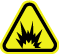

Operating Documentation
Direction 5670000, Rev# 1
Module Version 4.0, Version Date 2/4/10
Operating Documentation |
| ||||
| Potential Fatal Injury! | ||||
| before and while warming up the Cryostat: | ||||
|
| ||||
| Potential Fatal Injury! | ||||
| before starting to warm-up the Cryostat: | ||||
| Have all Work Assistants or Observers comply with the Buddy System Requirements & Certification subsection of 2301164PRE MR Magnet Safety Requirements. |
 |
| |||
| Fatal Explosive Hazard! | ||||
| Gas cylinder rupture/damage or opening cylinder valve fast will release 2400 psi gas from cylinder. | ||||
| Make sure gas cylinders are secure from falls and away from moving objects before using. Always open cylinder valve slowly. |
| ||||
| Potential Magnet Quench! | ||||
| A magnet quench during procedure could result in rapid expulsion of liquid helium through the Vertical Penetration. | ||||
| Make sure magnet is ramped down to zero field before starting to warm-up the Cryostat. |
| ||||
| Asphyxiation Hazard! | ||||
| Procedure generates odorless, colorless helium gas that displaces oxygen in the air. | ||||
| Make sure magnet room vent exhaust fan is on and that the magnet room doors are secured in the open position before warming up the Cryostat. |
| ||||
| Potential Cold Burn or Asphyxiation Hazard | ||||
| Internal cryostat pressure build-up to >5.25 psig will open the 5.25 psig relief valve. | ||||
Before removing either Ramp or Fill Port Caps or loosening
any component resulting in the release of cryogen pressure:
|
| ||||
| Potential Cold Burn Hazard! | ||||
| Exposure to Cryogens and contact with cold objects is possible during Cryostat Warm-Up. | ||||
| Wear protective clothing, nonabsorbent gloves and goggles when warming up the Cryostat. |
| ||||
| Electrical Shock Hazard! | ||||
| Contact with connectors leading to an energized Compressor can cause electrical shock. | ||||
| Disconnect the power cable and follow OSHA Lockout-Tagout (LOTO) procedures to make sure power is not supplied to the Compressor while warming up the Cryostat. |
| ||||
| ||||
| NOTE: | If the site has Magnet Monitor proprietary software, connect to Magnet Monitor, turn off the alarm for vessel pressure, and then turn the vessel pressure control to a high value of 0.5 psig and a low value of 0.4 psig. |
| Condition | Reference | Effectivity |
|---|---|---|
Make sure the area is secure and that ALL required Warning Signs are posted to meet the safety requirements stated in the following document before starting the Cryostat Warm-Up procedure. | - | |
Removal of some magnet enclosure components may be required to complete this Cryostat Warm-Up procedure. Refer to the appropriate document listed and the Service Methods documentation (available through the Common Documentation Library at gehealthcare.com or your local GE Healthcare Service Representative) before continuing if cover removal is required. | - | |
(continued) | - | |
The magnet must be at zero field before starting Cryostat Warm-Up. Refer to the following document. | - | |
Make sure the Magnet Room exhaust fan is on and operational and the Magnet Room door is propped open before starting Cryostat Warm-Up. | - | - |
The following procedure must be used when the magnet's liquid helium level is <50%.
Verify that the magnet is at zero magnetic field strength.
Check the magnet's liquid helium level. If the level is >50%, follow the warm-up procedure in Cryostat Warm-Up with Liquid Helium Recovery, Cryostat Warm-Up with Liquid Helium Recovery.
| ||||
| Electrical Shock Hazard! | ||||
| Contact with connectors leading to an energized Compressor can cause electrical shock. | ||||
| Disconnect the power cable and follow lockout/tagout procedures to make sure power is not supplied to the Compressor. |
Turn the Cryocooler Compressor off (downward O position shown in the illustration below). Disconnect and LOTO input power to the Cryocooler Compressor. Verify that no voltage is present by using a DVM or equivalent measuring device.
Disconnect the supply and return gas lines at the Coldhead. (See the illustration below.)
Open helium Vent Valve V2 shown below.
Remove the Burst Disc in conformance with Burst Disc Replacement, then reconnect the Vent Adapter.
Connect the Lakeshore Crytonics DRC-80 (46-265269G1), Lakeshore Model 208 Thermometer Kit (46-301477G1), MTM-101 Handheld Magnet Temperature Meter (5119507), or the Low-Cost Shield Temperature Diode Box (46-317543G1) to monitor the silicone diode temperature in conformance with Magnet Commissioning Checks.
Connect a helium gas (99.995%) and regulator set-up to the Helium Fill Port at Valve V1 (Illustration 3).
Insert a 7 in. (178 mm) Cryostat Stinger (46-294512P3) with a 16 in. (406 mm) Cryostat Stinger Extension (46-294512P12) into the Fill Port, then tighten the compression fitting. (See Illustration 4.)
Blow warm helium gas regulated at 4 to 6 psig through the Cryostat until the silicon diode temperature readout exceeds 90K.
Shut off the helium gas flow using the Positive On/Off Valve. (See Illustration 4.)
Remove the helium gas cylinder and regulator set-up, and connect the nitrogen gas set-up (shown below) in its place.
Open the Positive On/Off Valve.
Start a nitrogen gas flow regulated at 4 to 6 psig, and continue until the silicon diode temperature readout exceeds 290K.
Discontinue the nitrogen gas flow, remove the Stinger, cap Helium Fill Port V1, then close V2.
| ||||
| Do NOT use this Cryostat Warm-Up procedure if the magnet's liquid helium level is <50%. | ||||
Verify that the magnet is at zero magnetic field strength.
Check the magnet's liquid helium level. If the level is <50%, follow the warm-up procedure in Cryostat Warm-Up without Liquid Helium Recovery, Cryostat Warm-Up without Liquid Helium Recovery.
| ||||
| Electrical Shock Hazard! | ||||
| Contact with connectors leading to an energized Compressor can cause electrical shock. | ||||
| Disconnect the power cable and follow loto procedures to make sure power is not supplied to the Compressor. |
Turn the Cryocooler Compressor off (downward O position shown in Illustration 1).
Disconnect and LOTO input power to the Cryocooler Compressor. Verify that no voltage is present by using a DVM or equivalent measuring device.
Disconnect the supply and return gas lines at the Coldhead shown in Illustration 2.
Connect a Lakeshore Cryotonics DRC-80 (46-265269G1), Lakeshore Cryotonics Model 208 Thermometer Kit (46-301477G1), or Low-Cost Shield Temperature Diode Box (46-317543G1) to monitor the silicon diode temperature in conformance with Magnet Commissioning Checks.
Open Vent Valve V2 momentarily to purge the vent plumbing and reduce internal pressure to <0.2 psig, then close V2. (See Illustration 3.)
Disconnect the helium vent plumbing at “A” (shown in the illustration below), and connect the helium gas (99.995%) and regulator set-up at that point.
Loosen and remove the cap from Helium Fill Port V1. (See the illustration above.)
Insert a 7 in. (178 mm) Cryostat Stinger (46-294512P3) with a 16 in. (406 mm) Cryostat Stinger Extension (46-294512P12) into the Fill Port, and tighten the compression fitting. (See Illustration 4.)
Place the locking collar, washer, and O-ring from a prepared helium Dewar onto the other end of the transfer line as shown in the illustration below.
Open Valve V2.
Blow helium gas regulated at 4 to 6 psig through the setup and into the Cryostat.
Set the valves on the Dewar (shown in Illustration 8) to:
Wait for a bluish plume to start expelling from the transfer line, then:
Open the Helium Outlet Valve.
Fully insert the transfer line into the Dewar.
Back off the transfer line approximately 1 in. (25 mm) from the bottom of the Dewar.
Engage and lock the locking collar, washer and O-ring, securing the Transfer Line onto the Dewar.
Monitor the cryogen level, gas pressure, and Vent Valve to establish when the Dewar is filled and the Cryostat is empty of liquid helium.
When the Dewar is full or the Cryostat is empty, turn off the gas flow to the Cryostat and close Valve V2.
Close the Positive On/Off Valve on the transfer tube.
Loosen the Dewar's compression fitting, and withdraw the transfer line from the Dewar.
Set and wire the valves on the Dewar in the following positions: